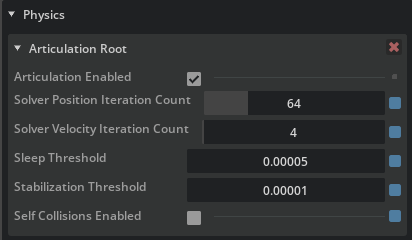
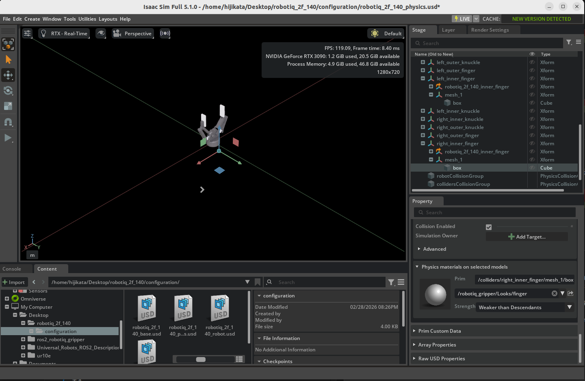
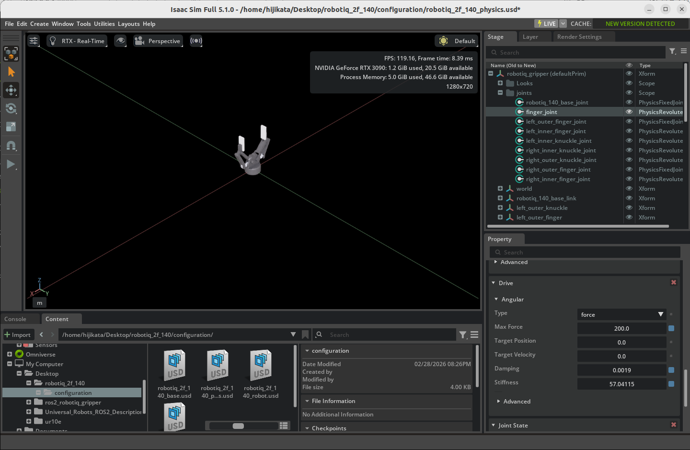
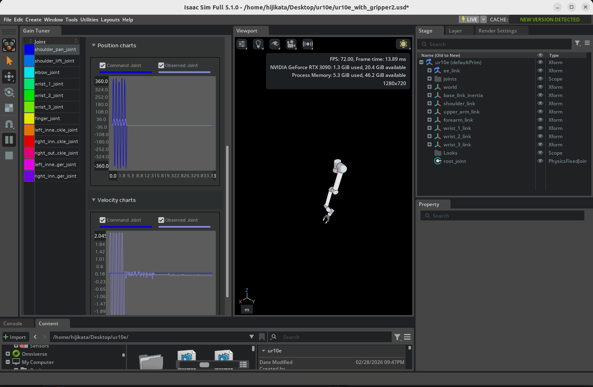

Configure a Manipulator¶
Learning Objectives¶
After completing this tutorial, you will have learned:
- How to adjust articulation solver settings
- How to create and apply physics materials (friction)
- How to set joint effort limits (Max Force)
- How to inspect articulations using Physics Inspector
- How to tune joint drive gains using Gain Tuner
Getting Started¶
Prerequisites¶
- Complete Tutorial 6: Setup a Manipulator before starting this tutorial.
Estimated Time¶
Approximately 30 minutes.
Overview¶
In the previous tutorial, we imported the UR10e robot arm and Robotiq 2F-140 gripper and connected them as a single articulation. However, the default settings are not sufficient for simulation accuracy and stability.
In this tutorial, we will adjust the following physics parameters to enable stable manipulation tasks (grasping, carrying objects, etc.):
- Solver iteration counts: Improve simulation accuracy
- Friction coefficients: Ensure the gripper can firmly grasp objects
- Joint effort limits: Configure appropriate gripping force
- Joint gains: Optimize target position tracking
Assets Used¶
We will use the assets created in Tutorial 6. If you have not completed it yet, you can use the sample assets included with Isaac Sim. Access them from the Content tab at the bottom-right of the screen:
| Asset | Path | Purpose |
|---|---|---|
| UR10e + Gripper (connected) | Samples > Rigging > Manipulator > import_manipulator > ur10e > ur > ur_gripper.usd |
Completed asset from Tutorial 6 |
| Fully configured (reference) | Samples > Rigging > Manipulator > configure_manipulator > ur10e > ur > ur_gripper.usd |
Completed asset for this tutorial (reference) |
Step 1: Adjust the Articulation¶
In manipulation tasks, numerous joints and mimic joints work in coordination, so the default solver settings may lack sufficient accuracy. In this step, we will adjust solver iteration counts and sleep conditions to improve simulation accuracy and stability.
1-1. Open the UR10e Physics Layer¶
If you imported from URDF in Tutorial 6, a Physics Layer file with a _physics suffix (e.g., ur10e_physics.usd) was generated in the UR10e asset folder. Open this file in Isaac Sim.
Why do you need to open the Physics Layer directly?
USD is a file format with a layered structure. When importing from URDF, the robot asset is split into a main layer (visuals and hierarchy) and a Physics Layer (physics properties and joint drives).
When you modify parameters through Isaac Sim's GUI (Property panel), the changes are written to the currently open layer. If you open the top-level USD file (such as ur_gripper.usd) and modify physics parameters, the changes will be written to the top-level layer and will not be reflected in the Physics Layer.
To save physics settings in the correct location, you must open the target Physics Layer file directly before making changes.
1-2. Enable and Configure the Articulation¶
-
Select the
ur10e/root_jointprim in the Stage panel. -
In the Property panel, locate the Physics > Articulation Root section.
-
Verify that the Articulation Enabled checkbox is checked (it is on by default).
-
Set the following parameters:
Parameter Default Value Description Solver Position Iterations Count 32 64 Number of solver iterations for position. Higher values improve joint constraint accuracy Solver Velocity Iterations Count 1 4 Number of solver iterations for velocity. Higher values improve velocity control accuracy Sleep Threshold 0.005 0.00005 Kinetic energy threshold below which the robot enters sleep state Stabilization Threshold 0.001 0.00001 Threshold at which stabilization processing is applied 
-
Save the changes with Ctrl + S.
Parameter Details
- Solver Position/Velocity Iterations Count: Increasing iteration counts improves simulation accuracy but also increases computational cost. Robots with many degrees of freedom like the UR10e + gripper, or robots with mimic joints, require higher iteration counts.
- Sleep Threshold / Stabilization Threshold: Sleep is a feature that pauses simulation for objects with sufficiently small motion to reduce computational load. In manipulation tasks, even subtle movements are important, so we lower the thresholds to prevent the robot from entering sleep mode.
Step 2: Add Physics Materials¶
Without friction on the gripper fingertips, objects will slip and fall even when grasped. In this step, we will create a physics material (friction coefficients) and apply it to the gripper fingertips.
2-1. Open the Robotiq 2F-140 Physics Layer¶
Close the UR10e Physics Layer opened in Step 1, and open the Robotiq 2F-140 gripper's Physics Layer. Open the file with the _physics suffix (e.g., robotiq_2f_140_physics.usd) in the gripper's asset folder.
If using the Isaac Sim bundled asset, open Samples > Rigging > Manipulator > import_manipulator > robotiq_2f_140 > configuration > robotiq_2f_140_physics.usd.
2-2. Create a Physics Material¶
-
Right-click the
robotiq_gripper(orrobotiq_arg2f_140_modelfor the bundled asset) prim in the Stage panel. -
Select Create > Physics > Physics Material > Rigid Body Material.
-
Move the created
PhysicsMaterialprim to the Looks folder:- Drag and drop
PhysicsMaterialinto therobotiq_arg2f_140_model/Looksfolder.
- Drag and drop
-
Rename the material to finger (right-click > Rename).
2-3. Configure Friction Coefficients¶
-
Select the created
fingermaterial. -
Set the following friction coefficients in the Property panel:
Parameter Value Description Static Friction 1.0 Static friction coefficient. Friction force before the object starts moving Dynamic Friction 1.0 Dynamic friction coefficient. Friction force while the object is sliding
About Friction Coefficient Values
A friction coefficient of 1.0 represents high friction similar to rubber. Gripper fingertips require high friction — objects cannot be held with low values. Adjust within the range of 0.5 to 2.0 depending on your task.
2-4. Apply the Material to the Gripper Fingertips¶
Apply the created friction material to the left and right fingertip colliders of the gripper.
-
Select the
colliders/left_inner_finger/mesh_1/boxprim in the Stage panel. -
Locate the Physics > Physics materials on selected models section in the Property panel.
-
Select the material created earlier:
/World/robotiq_arg2f_140_model/Looks/finger. -
Similarly, apply the same material to
colliders/right_inner_finger/mesh_1/box. -
Save the changes with Ctrl + S.

Step 3: Configure Joint Effort Limits¶
The gripper's finger_joint is the main joint that controls the gripper's open/close motion. In this step, we will set the maximum force (torque) that this joint can exert.
Continue working in the Robotiq 2F-140 Physics Layer opened in Step 2.
-
Select the
robotiq_gripper/joints/finger_joint(orrobotiq_arg2f_140_model/joints/finger_jointfor the bundled asset) prim in the Stage panel. -
Locate Max Force in the Drive > Angular section of the Property panel.
-
Set Max Force to 200.
Parameter Value Description Max Force 200 Maximum torque (N·m) that finger_joint can exert -
Save the changes with Ctrl + S.

About Max Force Values
Set the Max Force value according to the actual robot's torque specifications. Extremely high values may cause unstable behavior such as objects being penetrated. In such cases, increasing the physics simulation step frequency (reducing the time step) can help improve stability.
Step 4: Inspect the Robot Articulation¶
Use the Physics Inspector tool to verify that the settings from the previous steps have been applied correctly.
4-1. Open the Asset¶
Open the top-level UR10e asset created in Tutorial 6 (e.g., ur_gripper.usd). This file references the Physics Layers modified in Steps 1–3, so the changes are automatically reflected.
If using the Isaac Sim bundled asset, open Samples > Rigging > Manipulator > configure_manipulator > ur10e > ur > ur_gripper.usd.
4-2. Launch Physics Inspector¶
-
From the Isaac Sim menu, select Tools > Physics > Physics Inspector.
-
The Physics Inspector window will appear.

4-3. Verify the Articulation¶
-
Select the UR10e articulation (
ur10eprim) in the Stage panel. -
Click the circular refresh icon in the Physics Inspector window to load the articulation information.
-
Drag the blue sliders for each joint to change the target position. Verify that the DOF (degrees of freedom) positions track the targets.

-
Close the Physics Inspector window when verification is complete.
Physics Inspector Caveats
Physics Inspector partially initializes omni.physx. As a result, running a simulation after using Physics Inspector may cause unexpected behavior. We recommend reloading the stage after closing Physics Inspector before running a simulation.
Step 5: Tune Gains with Gain Tuner¶
Finally, we will adjust the gains (control parameters) for each joint. Gains are important parameters that determine how quickly and accurately joints reach their target positions.
What Are Gains?
Gains are parameters for PD control (Proportional-Derivative control) of joints.
- Stiffness (P gain): Determines how strongly the joint tries to return to its target position when displaced.
- Damping (D gain): Determines the strength of the force that suppresses joint oscillations.
If these values are not properly set, the robot may fail to reach its target position or may oscillate.
5-1. Launch Gain Tuner¶
-
From the Isaac Sim menu, select Tools > Robotics > Asset Editors > Gain Tuner.
-
The Gain Tuner window will appear.
5-2. Select the Robot¶
-
From the Robot Selection dropdown, select the ur10e articulation.
-
All robot joints will be displayed in a list.
5-3. Adjust Gains¶
In the Tune Gains panel, adjust the joint gains. Switch from Stiffness (default) to Natural Frequency mode to set gains using Natural Frequency and Damping Ratio.
The following critical damping configuration is recommended:
| Parameter | Recommended Value | Description |
|---|---|---|
| Nat. Freq. | 100.0 | Natural frequency. Controls response speed |
| Damping Ratio | 1.0 | Damping ratio. 1.0 achieves critical damping (fastest response without oscillation) |
What Is Critical Damping?
A state where Damping Ratio = 1.0 is called critical damping. This is the state that reaches the target position the fastest without oscillation. A Damping Ratio below 1.0 causes oscillation (overshoot), while above 1.0 results in slower response.

5-4. Test the Gains¶
Test the configured gains in the Test Gains Settings panel. With the simulation running (press the Play button), click the RUN TEST button to test each joint's motion.

5-5. Gain Tuning Tips¶
If gain tuning is not working as expected, refer to the following guidelines:
| Symptom | Solution |
|---|---|
| Does not reach target position (undershoot) | Slightly increase Nat. Freq. |
| Oscillates past target position (overshoot) | Decrease Nat. Freq. or increase Damping Ratio |
| Movement is too slow | Increase Nat. Freq. |
| Gain effects are hard to observe | Disable gravity during testing to make gain effects easier to see |
Effective Testing Methods
- Test joint groups that are expected to move together (e.g., all gripper joints) as a group.
- Adjust the Maximum Speed for slowly-moving joints.
- Use the Sequence dropdown to customize the joint testing order.
Summary¶
This tutorial covered the following topics:
- Articulation solver settings: Adjusted iteration counts and sleep thresholds to improve simulation accuracy for multi-DOF robots
- Physics materials (friction): Applied high-friction materials to gripper fingertips to stabilize object grasping
- Joint effort limits: Set Max Force for finger_joint to ensure appropriate gripping force
- Articulation inspection with Physics Inspector: Visually verified joint target tracking
- Joint gain tuning with Gain Tuner: Optimized PD gains using Natural Frequency and Damping Ratio
Reference Asset
The fully configured asset can be found in the Content browser at Samples > Rigging > Manipulator > configure_manipulator > ur10e > ur > ur_gripper.usd.
Next Steps¶
Proceed to the next tutorial, "Generate Robot Configuration File", to learn how to generate configuration files for kinematics solvers.